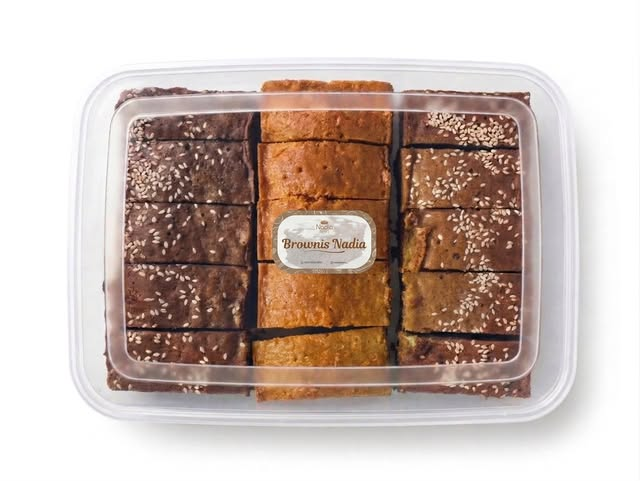

Roti
Hangat untuk memulai hari.
EMPAT CARA MENIKMATI NADIA
Arahkan kursor atau sentuh ilustrasinya.
Ada kejutan kecil di setiap pilihan.
Hangat untuk memulai hari.
Sepotong lembut, banyak cerita.
Renyah untuk teman ngobrol.
Berlapis, manis, dan akrab.
Dibuat dengan perhatian. Dinikmati pelan-pelan.
HALO, SELAMAT DATANG
Roti, roti kering, dan brownies rumahan dari Parakansalak, Sukabumi.
Sesederhana camilan favorit dan orang tersayang di dekatmu.

PILIHAN DARI DAPUR KAMI
Untuk teman ngopi, bekal cerita,
atau sekadar memanjakan diri.
Teman sederhana untuk sarapan dan sela-sela hari yang sibuk.
Tanya pilihan roti ↗Camilan untuk menemani secangkir teh dan obrolan yang panjang.
Tanya pilihan roti kering ↗Sepotong manis yang pas untuk dinikmati sendiri maupun dibagi.
Tanya pilihan brownies ↗Pilihan varian, harga, dan ketersediaan dapat ditanyakan langsung melalui WhatsApp.
DARI LAYAR KE MEJA MAKAN
Roti, roti kering, atau brownies? Pilih yang sedang kamu inginkan.
Tanyakan varian, harga, jumlah, dan kapan pesananmu dibutuhkan.
Sepakati detail pembayaran dan cara menerima pesanan dengan tim Nadia.
Klik tombol pesan atau tautan pada kategori produk. Tim Nadia Bakery akan membantu memberikan informasi varian, harga, dan ketersediaan terbaru melalui WhatsApp.
Sampaikan jumlah dan tanggal kebutuhanmu melalui WhatsApp. Tim Nadia akan mengonfirmasi pilihan produk dan apakah pesanan dapat dipenuhi.
Nadia Bakery berada di Kp. Lebak Jeruk, Parakansalak, Sukabumi. Hubungi kami untuk petunjuk lokasi serta konfirmasi pengambilan atau pengiriman pesanan.
DARI DAPUR KAMI, UNTUKMU
Kami tunggu sapaanmu. Yuk, temukan favorit barumu di Nadia.
Pesan lewat WhatsApp ↗@nadiabakery_ ↗